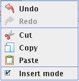

The edit menu and its operations

The edit menu contains operations that are used for the editing or
effect the editing in some way. The operations in the menu are described in the list
bellow. The list is in the same order as the menu items in the menu.
-
The undo command makes the last operation undone. The number of undo commands that is possible to perform is unlimited.
- The redo command cancels the last undo command.
- The cut command first saves all
selected graph objects so they can be pasted with the paste command
later and then removes them.
- The copy command makes a copy of the
selected objects in the graph so they can be pasted with the paste
command
- The paste command paste the saved
object from the cut or copy commands in the graph window. It is possible to paste
parts of graphs that have been copied or cut from other graph windows.
- The Insert mode alternative can be set
to on and off below
and not insert mode for more information.